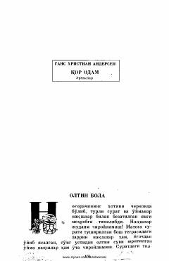

QOGans Xristian Andersenning bolalar uchun mo'ljallangan mashhur va sehrli ertaklar to'plami.
Ushbu kitobda mashhur daniyalik yozuvchi Gans Xristian Andersenning "Qor odam" nomli sehrli ertaklar to'plami jamlangan. Sahifalarda oltin sochli Peter ismli bola va uning taqdiri haqida so'zlovchi "Oltin bola" hamda boshqa ma'rifiy ertaklar o'rin olgan. Asarlar bolalarga ezgulik, sehr va hayotiy saboqlarni ulashadi.